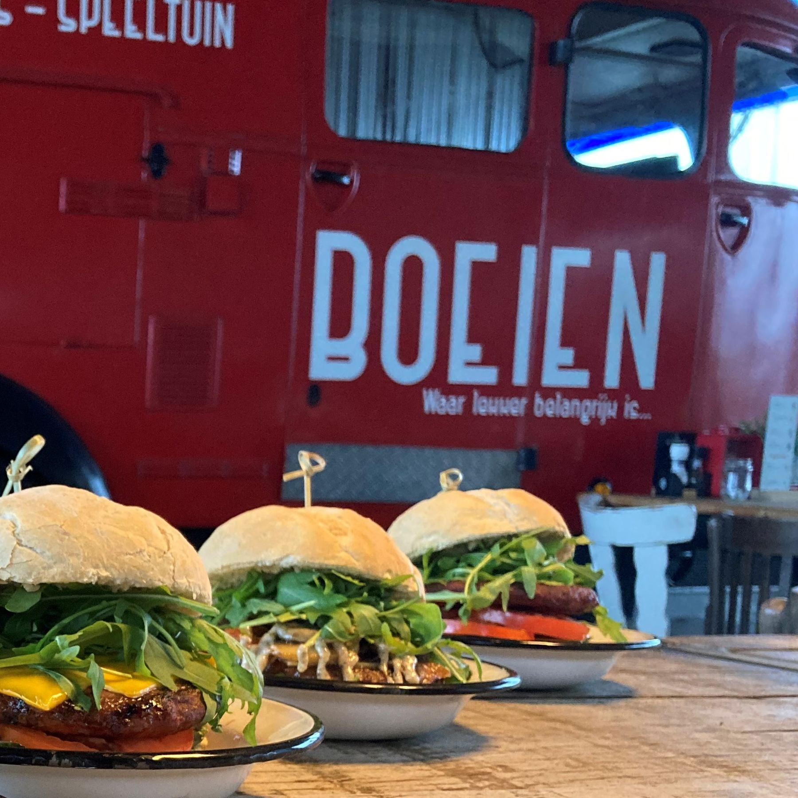
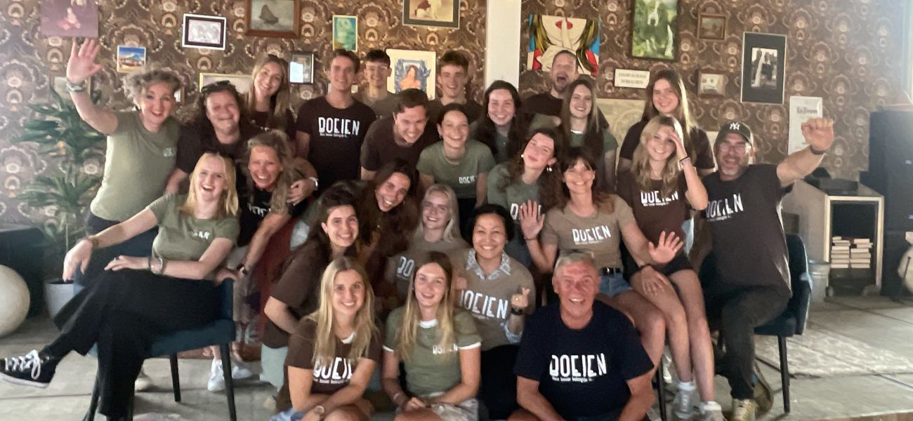
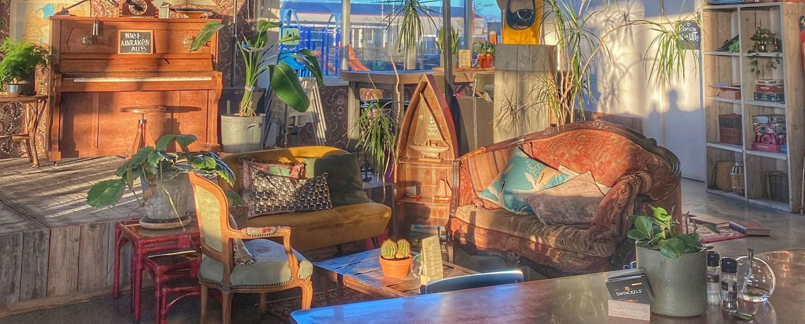
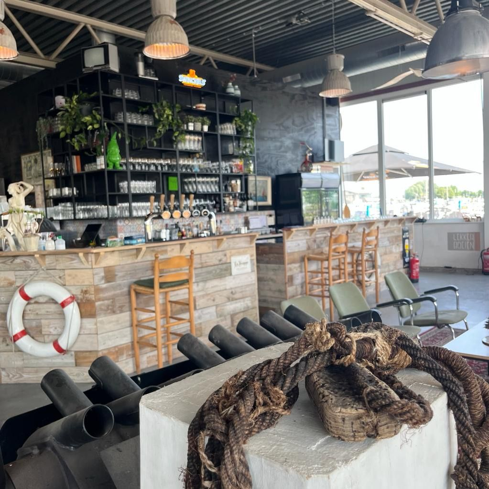
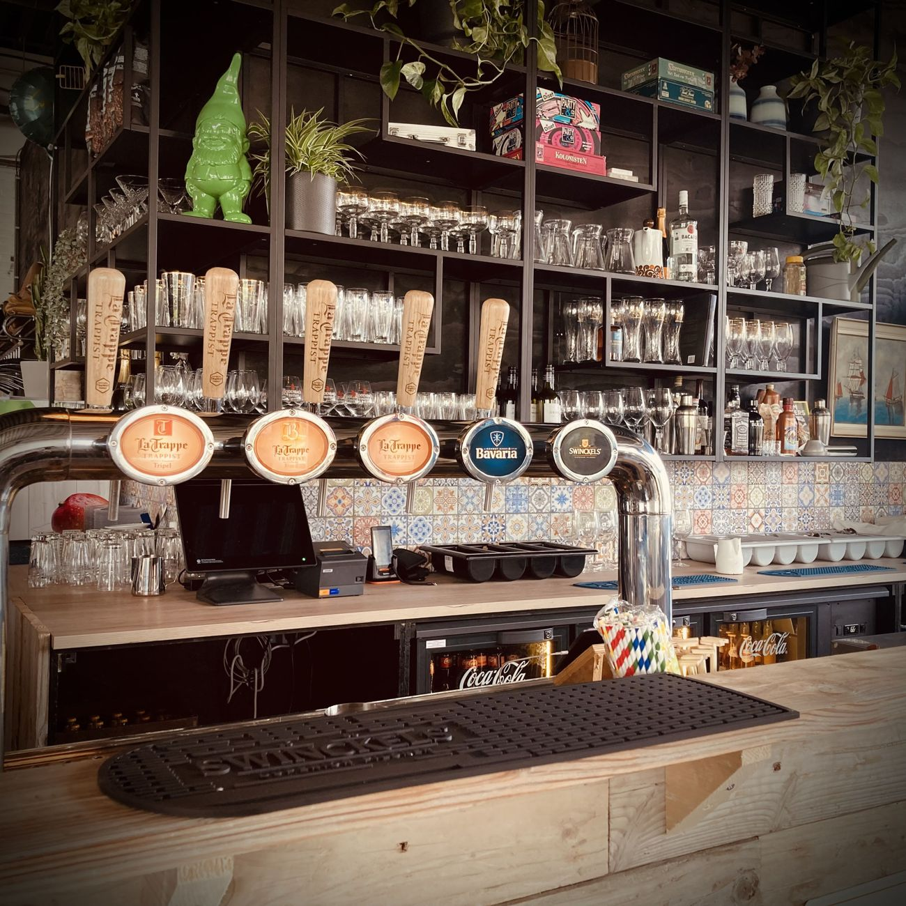
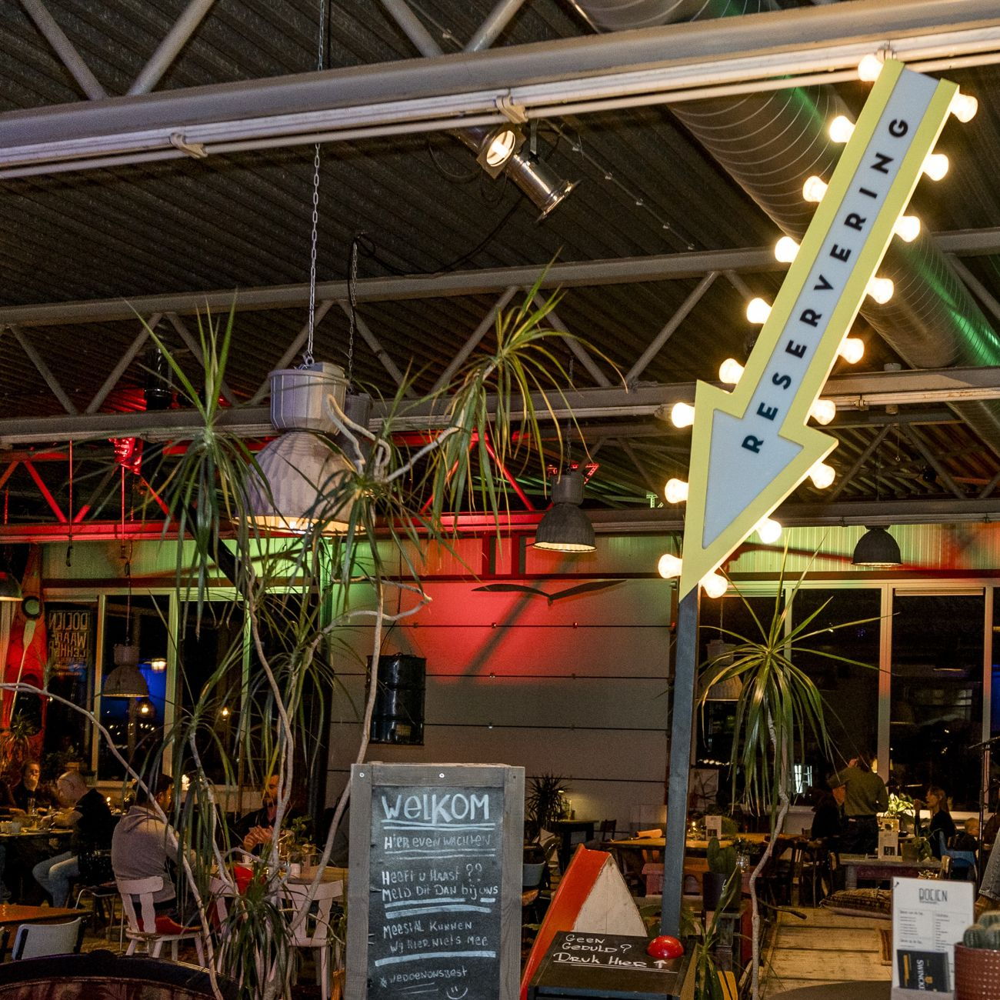
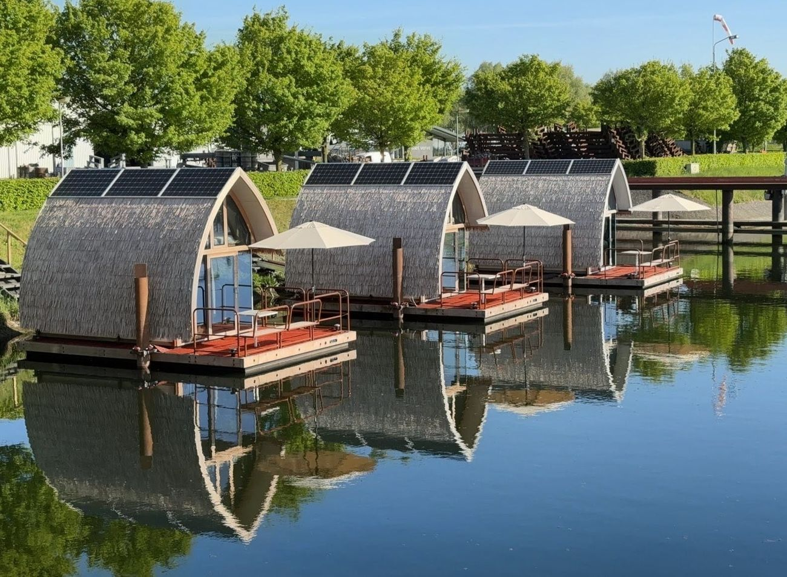
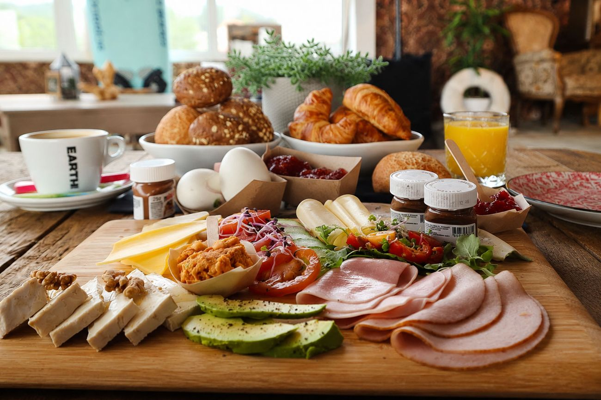

Waar lekker belangrijk is
Restaurant midden in de jachthaven van Drimmelen. Burgers, streetfood en kleine gerechten om te delen, met een groot terras aan het water. Jong en oud zijn welkom, alleen, met z'n tweeën of met de hele groep.
Vandaag gegeten bij Boeien en wat een aanrader! Het eten was super lekker en vol smaak.Luuk, via Tripadvisor · 4,6 uit 87 reviews
Wat onze gasten zeggen
"Wat een verrassende plek. Best ever pulled pork hamburger, super frites en heerlijke truffel mayonaise."
mhuberts, Ulvenhout · Tripadvisor"Wat een top bediening, geweldig! Heerlijk eten en een zeer goede sfeer."
Dorien G · Tripadvisor"Heerlijk eten en gastvrije & enthousiaste bediening in een gemoedelijke originele ambiance!"
Ans, Doetinchem · Tripadvisor"Vriendelijk personeel en je kan er heerlijk lunchen."
Leo v Kessel, Reek · Tripadvisor"Wat ons vooral bijblijft is de zeer gemotiveerde en gastvrije zaakvoerder."
Luc S, Kalmthout · Tripadvisor"Heerlijk En gezellig geluncht! Verassend! Top bediening, gastheerschap echt super!"
Jacqueline V · Tripadvisor
Over Boeien
"BOEIEN is waar alles samenkomt. Jong, oud, iedereen is welkom."
Hier wordt gelachen, gedeeld en vooral goed gegeten en gedronken. Dat doen we samen, als team, met energie en zonder onzin. Het begon met onze burgers en die zijn na ruim tien jaar nog steeds favoriet.
Minder verspillen, meer waarde: zo werken we. Wat je bij ons ziet is voor een groot deel gerecycled en vaak gewoon door onszelf gemaakt.
Een kijkje binnen
Vintage banken, een brandweerwagen en een bar vol La Trappe. Bij mooi weer zit je op het terras aan de haven.






Overnachten op het water
Slaap in een duurzame tiny house van Bieslodge, ook in Jachthaven Biesbosch, en begin de dag met een uitgebreid ontbijt bij ons. Vlak bij Nationaal Park De Biesbosch: ideaal voor een romantisch weekend, wandelen, fietsen of de Biesbosch vanaf het water.
- Ontbijt tussen 09:00 en 11:00
- Ook in Jachthaven Biesbosch
- Boeken via Bieslodge
- Ontbijt aanvinken in je bevestiging
Reserveren
We raden reserveren aan. Online kan voor een deel van de tafels, bellen kan altijd.
Zo reserveer je een tafel
Online of even bellen, allebei kan.
- Online reserverenWe reserveren 25% van onze tafels online.
- Vol? Bel ons gerustDan zoeken we samen naar een tafeltje.
- Groep van meer dan 8?Bel even, dan kijken we samen naar de mogelijkheden.
Openingstijden
Tot 1 november
Vanaf 1 november
Keuken
Terras
Niet te reserveren. Zie je een mooie tafel? Ga lekker zitten.
Op zondag start de lunch om 11:00. Van 11 t/m 31 januari zijn we met vakantie.
Werken bij Boeien?
We zoeken enthousiaste toppers die houden van aanpakken. Seizoenswerk, parttime of fulltime, en wil je doorgroeien, dan helpen we je daarbij.